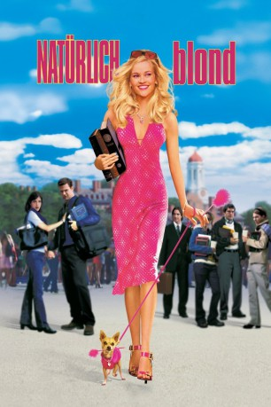
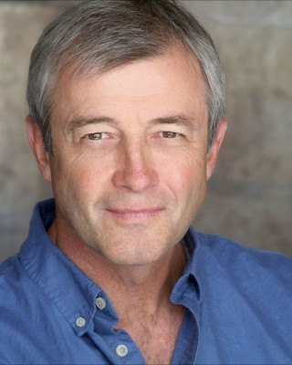
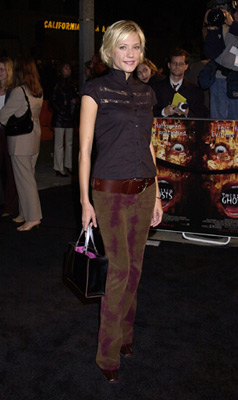
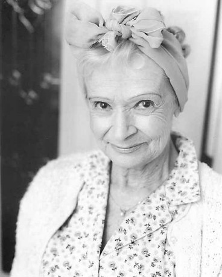

#2590 Natürlich blond!
Alternativ: Legally Blonde
 
 IMDB-Wertung: 6.2 / 10
IMDB-Wertung: 6.2 / 10  Metascore: 59
Metascore: 59 
US-Erfolgskomödie von Robert Luketic ("21") mit Reese Witherspoon in der Hauptrolle. Die blonde Elle Woods wird von ihrem Freund wegen dessen Jura-Studiums verlassen. Obwohl sie offensichtlich vollkommen ungeeignet für ein solches Studium ist, bewirbt sie sich auch.
Jahr: 2001
Dauer: 96 Minuten
FSK: 0
Land: USA Studio: MGMTonspuren: DTS - ,
Untertitel: Deutsch,
Auflösung: 1080p (1920x816) Größe: 6430 MB
Genre: Komödie, Liebe
Regisseur:  Robert Luketic
Robert Luketic
Drehbuch: Amanda Brown, Karen McCullah, Kirsten Smith
Soundtrack: Rolfe Kent
Darsteller:
 Reese Witherspoon als Elle Woods
Reese Witherspoon als Elle Woods Luke Wilson als Emmett
Luke Wilson als Emmett Selma Blair als Vivian Kensington
Selma Blair als Vivian Kensington Matthew Davis als Warner
Matthew Davis als Warner Victor Garber als Professor Callahan
Victor Garber als Professor Callahan Jennifer Coolidge als Paulette
Jennifer Coolidge als Paulette Holland Taylor als Professor Stromwell
Holland Taylor als Professor Stromwell Ali Larter als Brooke Taylor Windham
Ali Larter als Brooke Taylor Windham Jessica Cauffiel als Margot
Jessica Cauffiel als Margot Alanna Ubach als Serena
Alanna Ubach als Serena- Osgood Perkins als Dorky David Kidney
 Linda Cardellini als Chutney
Linda Cardellini als Chutney Bruce Thomas als UPS Guy
Bruce Thomas als UPS Guy Meredith Scott Lynn als Enid
Meredith Scott Lynn als Enid Raquel Welch als Mrs. Windham Vandermark
Raquel Welch als Mrs. Windham Vandermark Samantha Lemole als Claire
Samantha Lemole als Claire Michael B. Silver als Bobby
Michael B. Silver als Bobby- Kimberly McCullough als Amy
- Shannon O'Hurley als DA Joyce Rafferty
 Greg Serano als Enrique
Greg Serano als Enrique- Lisa Arch als Boutique Saleswoman
- Cici Lau als LA Nail Technician
- Allyce Beasley als CULA Advisor
 Kevin Cooney als Head of Admissions
Kevin Cooney als Head of Admissions Wayne Federman als Admissions Guy
Wayne Federman als Admissions Guy-  James Read als Elle's Father
 Tane McClure als Elle's Mother
Tane McClure als Elle's Mother Doug Spinuzza als Intense Ivan Berliner
Doug Spinuzza als Intense Ivan Berliner Lisa K. Wyatt als Jail House Guard
Lisa K. Wyatt als Jail House Guard- Corinne Reilly als Reporter
- Victoria Mahoney als Reporter
- Lacey Beeman als Nervous 1L Girl
- Brody Hutzler als Grant
- Chaney Kley als Brandon
- John Cantwell als Maurice
-  Nectar Rose als Freshman Girl
- Jodi Harris als Another Sister
 Sasha Barrese als Another Girl
Sasha Barrese als Another Girl- Kennedy Stone als Sorority Girl
- Lily als Rufus
 Joan Blair als Prisoner , uncredited
Joan Blair als Prisoner , uncredited- Ali Chen als Manicurist , uncredited
- Gary Castro Churchwell als Harvard Law Student , uncredited
 Curt Clendenin als College Classmate , uncredited
Curt Clendenin als College Classmate , uncredited- Richard Hillman als College Student , uncredited
- Seth Adam Jones als Rowdy Student , uncredited
 John Kapelos als Dewey Newcombe , uncredited
John Kapelos als Dewey Newcombe , uncredited-  Beverly Polcyn als Old Dancer at Beauty Salon , uncredited
- Rachel Ryling als Sorority sister , uncredited
- Scott Ryan Whinery als Bespectacled Boy , uncredited
Datei: X:\2-Dilogie(N-Z)\Natürlich blond\Natürlich blond! (2001, FSK0, 1920x816).mkv seit 25.11.2015
Festplatte: HD Collection-2(A-Z)-3(A-M)
 Alle Filme aus Gruppe '2-Dilogie(N-Z)\Natürlich blond'
Alle Filme aus Gruppe '2-Dilogie(N-Z)\Natürlich blond'